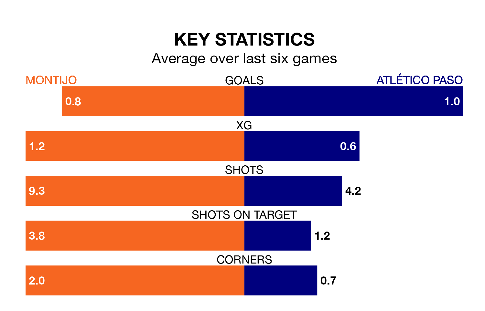

Montijo are on a terrible run ahead of hosting Atlético Paso at the Estadio Municipal Emilio Macarro Rodriguez on Sunday, with just one point collected from their last six games.
Montijo have picked up just one draw in their last six Segunda División RFEF Group 5 games, and face an Atlético Paso side whose last six games have brought three wins and one draw.
Montijo are bottom of the table after 33 games, of which they have won six and drawn five, earning 23 points.
Atlético Paso are 13 places ahead of the home side in fifth, with 14 wins and 11 draws putting them on 53 points.
With 26 goals in 33 games so far this season, the visitors are the league's joint-second-lowest scorers with 0.8 goals per game. But they are conceding fewer than average too, letting in 21 goals at a rate of 0.6 per game.
Montijo are also below average scorers, with 0.8 goals per game, compared to a league average of 1.1. They have conceded 1.7 goals per game.
In the last three years, Montijo and Atlético Paso have played each other on three occasions. Atlético Paso won all of them.
Their last meeting was on January 7, when Atlético Paso won 2-1 at home.
Montijo's last match was on April 28, a 3-1 loss against Llerenense, with Víctor Manuel Castaño Terrazas getting the goal for Montijo.
Atlético Paso beat Gimnástica Segoviana CF 2-1 last time out, also on April 28, with Alejandro Altube Suárez and Alfonso Jesús Fernández Martín on the scoresheet.
Updated: 12:00 (UTC), 02/05/24